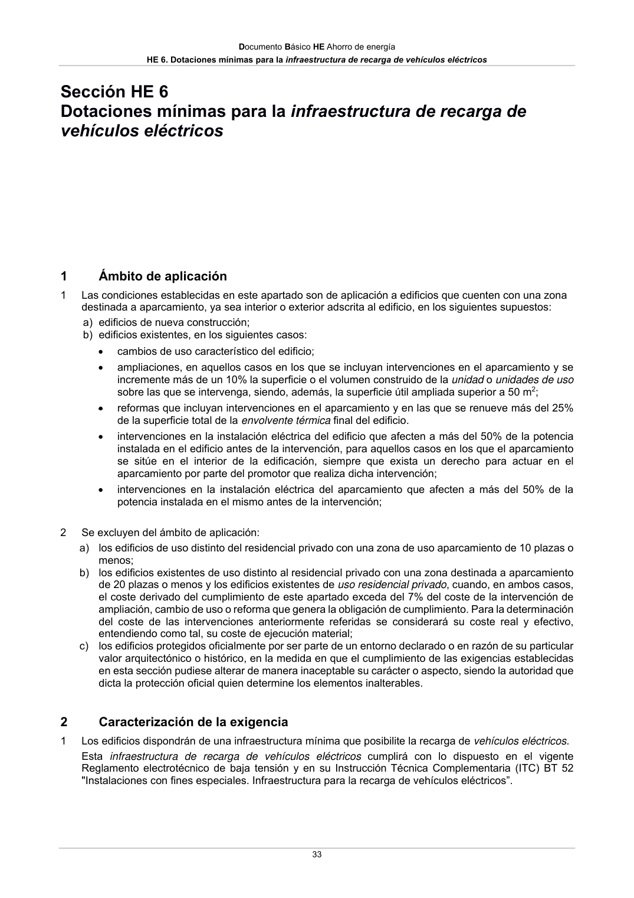

DB-HE Ahorro de energía · edición 2022-06-14 · capa oficial
Documento DB-HE-oficial · SHA-256 del PDF 7f890bd495552e979f83f72c5f5c7b642e745911a8e343a7b5b73023ce0e1f05
Página física 33 de 56.
Copia fiel del PDF fuente · Fuente oficial
Ficha de la disposición en la fuente oficial
Formato: Texto de la página (Markdown)
Documento Básico HE Ahorro de energía HE 6. Dotaciones mínimas para la infraestructura de recarga de vehículos eléctricos 33 Sección HE 6 Dotaciones mínimas para la infraestructura de recarga de vehículos eléctricos 1 Ámbito de aplicación 1 Las condiciones establecidas en este apartado son de aplicación a edificios que cuenten con una zona destinada a aparcamiento, ya sea interior o exterior adscrita al edificio, en los siguientes supuestos: a) edificios de nueva construcción; b) edificios existentes, en los siguientes casos: cambios de uso característico del edificio; ampliaciones, en aquellos casos en los que se incluyan intervenciones en el aparcamiento y se incremente más de un 10% la superficie o el volumen construido de la unidad o unidades de uso sobre las que se intervenga, siendo, además, la superficie útil ampliada superior a 50 m2; reformas que incluyan intervenciones en el aparcamiento y en las que se renueve más del 25% de la superficie total de la envolvente térmica final del edificio. intervenciones en la instalación eléctrica del edificio que afecten a más del 50% de la potencia instalada en el edificio antes de la intervención, para aquellos casos en los que el aparcamiento se sitúe en el interior de la edificación, siempre que exista un derecho para actuar en el aparcamiento por parte del promotor que realiza dicha intervención; intervenciones en la instalación eléctrica del aparcamiento que afecten a más del 50% de la potencia instalada en el mismo antes de la intervención; 2 Se excluyen del ámbito de aplicación: a) los edificios de uso distinto del residencial privado con una zona de uso aparcamiento de 10 plazas o menos; b) los edificios existentes de uso distinto al residencial privado con una zona destinada a aparcamiento de 20 plazas o menos y los edificios existentes de uso residencial privado, cuando, en ambos casos, el coste derivado del cumplimiento de este apartado exceda del 7% del coste de la intervención de ampliación, cambio de uso o reforma que genera la obligación de cumplimiento. Para la determinación del coste de las intervenciones anteriormente referidas se considerará su coste real y efectivo, entendiendo como tal, su coste de ejecución material; c) los edificios protegidos oficialmente por ser parte de un entorno declarado o en razón de su particular valor arquitectónico o histórico, en la medida en que el cumplimiento de las exigencias establecidas en esta sección pudiese alterar de manera inaceptable su carácter o aspecto, siendo la autoridad que dicta la protección oficial quien determine los elementos inalterables. 2 Caracterización de la exigencia 1 Los edificios dispondrán de una infraestructura mínima que posibilite la recarga de vehículos eléctricos. Esta infraestructura de recarga de vehículos eléctricos cumplirá con lo dispuesto en el vigente Reglamento electrotécnico de baja tensión y en su Instrucción Técnica Complementaria (ITC) BT 52 "Instalaciones con fines especiales. Infraestructura para la recarga de vehículos eléctricos”.
